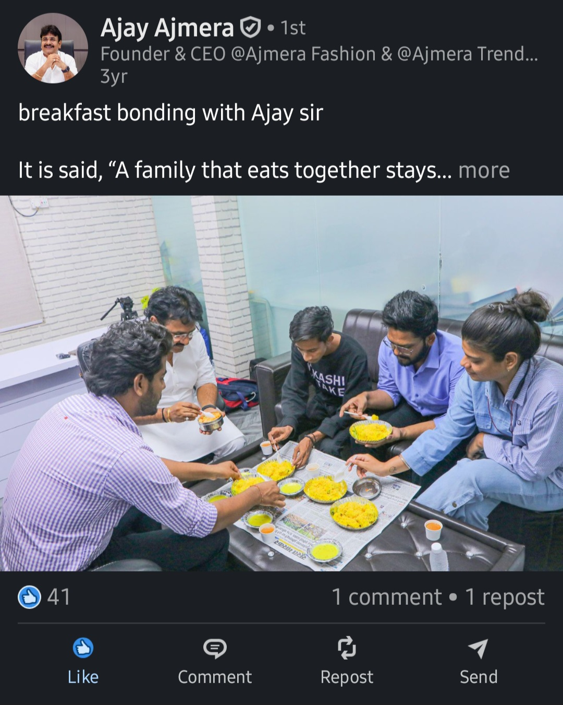

Case 06 · Ajmera Fashion
FROM CEO ACTIVITIES TO PERSONAL BRAND CONTENT
Building a personal content calendar around the CEO and Brand Ambassador, turning daily activities, employee interactions and business conversations into planned content.
01 · The context
THE CEO HAD MORE TO SAY THAN A COMPANY PAGE COULD SHOW
While working at Ajmera Fashion, my responsibilities expanded beyond the regional social channels. After I learned the wider content operation, I got the opportunity to work with the CEO's PR team.
The work was different from product-led social content. The subject was now the person behind the business: the CEO and Brand Ambassador, his activities, his interactions with employees and his business perspective.
The source material for this case documents a personal content calendar and five YouTube examples that I worked on during that period.
02 · The problem
A PERSONAL BRAND CANNOT RUN ONLY WHEN SOMETHING IMPORTANT HAPPENS
A CEO has a constant stream of material around them: meetings, people, decisions, business activity and everyday moments. Without planning, that material remains scattered and content becomes occasional.
That required thinking about what could be prompted, what was worth documenting and which type of story each moment could support.
03 · The strategic decision
BUILD THE CALENDAR AROUND THE PERSON, NOT JUST THE COMPANY
The PR approach used a personal content calendar for the CEO and Brand Ambassador. Instead of waiting for a campaign brief, the calendar created prompts around material already available in his working life.
The documented directions included:
- Daily activities: moments from the CEO's working routine that could be shown publicly.
- Employee meetings: interactions that could show the person behind the business and his relationship with the team.
- Business videos: conversations and videos where the CEO could communicate around the business.
The important shift was from asking, "What should we post?" to asking, "What is happening around the person that can become a useful story?"
04 · The execution
FROM DAILY ACTIVITY TO PLANNED CONTENT
My contribution sat inside this PR and content workflow. I helped plan the personal content calendar and worked on content pieces that translated the CEO's activities and business communication into social and YouTube material.
I also contributed through scripting and content planning. The broader production was collaborative, so this case does not claim that I personally filmed, edited or designed every published video.
05 · The work in practice
THREE CONTENT DIRECTIONS
1. Showing the working day
Daily activities created a steady source of material. The purpose was not to document every movement, but to identify moments that helped an audience see the person behind the company.
2. Showing leadership through people
Employee meetings gave the content another angle. Instead of talking about leadership abstractly, the content could show the CEO interacting with the people inside the organisation.
3. Letting the CEO communicate the business
Business videos gave the CEO a direct role in explaining the business. This moved communication away from a company page simply speaking about its leadership and toward leadership speaking for itself.
06 · Evidence
FIVE PUBLIC YOUTUBE EXAMPLES
These five YouTube links were supplied as examples of the CEO and Brand Ambassador content I worked on during the PR period. No performance numbers are attached because post-level analytics were not supplied with the case evidence.
 View YouTube example 01
View YouTube example 01
 View YouTube example 02
View YouTube example 02
 View YouTube example 03
View YouTube example 03
 View YouTube example 04
View YouTube example 04
 View YouTube example 05
View YouTube example 05
07 · Supporting proof
THE WORK ALSO EXTENDED INTO PUBLIC COMPANY CONTENT
The wider Ajmera work included public-facing content connected to the founder and company. One documented example is a public LinkedIn post from Ajay Ajmera, alongside the Life at Ajmera office reel used in the corporate-content case.

This is supporting evidence of the broader content environment, not a claim that every element of the post was solely produced by me.
08 · Why it worked
THE CEO BECAME A SOURCE OF CONTENT, NOT JUST A NAME
The strongest part of the approach was consistency of opportunity. A personal brand does not need a completely new idea every day if the person's real work already contains useful material.
- Daily activity created recurring content opportunities.
- Employee interactions added a human dimension to leadership content.
- Business videos gave the CEO a direct communication role.
- A calendar made these opportunities easier to plan instead of treating them as one-off posts.
The job was to recognise the story inside real activity and give it a planned content form.
09 · The result
A REPEATABLE PERSONAL CONTENT TRACK
This case does not use a follower, reach or engagement number because the supplied evidence does not include reliable post-level analytics for these five videos.
The documented result was a personal content system around the CEO and Brand Ambassador, with planned directions for daily activities, employee interactions and business videos, supported by public YouTube examples.
That is a more defensible result than attaching an unsupported growth number to the work.
10 · What this changed
I STARTED THINKING ABOUT PEOPLE AS CONTENT CHANNELS
Working with the CEO's PR team changed the way I looked at personal branding.
A company account starts with the company as the subject. A personal brand starts with a person whose real behaviour, knowledge, relationships and decisions provide the raw material.
That means the strategist's job is not simply to write captions. It is to notice what can become a story, decide why it matters, and create a process that makes the story publishable.
11 · My role
WHAT I ACTUALLY OWNED
- Personal content calendar planning for the CEO and Brand Ambassador
- Identifying daily activities that could become content
- Planning content around employee meetings and interactions
- Business-video content planning
- PR-related scripting and content planning
- Content direction and production coordination
- Working with the wider PR and creative team on execution
12 · The takeaway
PERSONAL BRANDING STARTS WITH OBSERVATION
The most useful lesson was simple: a personal content strategy becomes stronger when it starts from the person's actual life rather than forcing a content idea onto them.
At Ajmera, the CEO's activities, employee interactions and business conversations became the raw material. The calendar and content planning turned those moments into opportunities for public communication.
That workflow is the part of this experience I would carry into future executive, founder and entertainment-brand work.